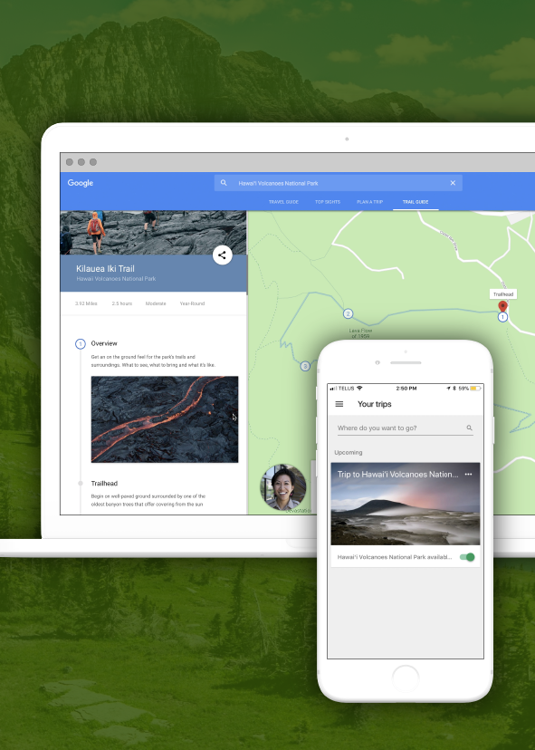
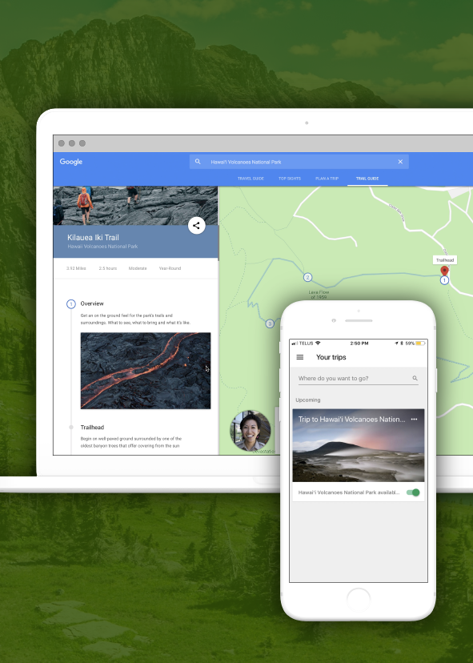
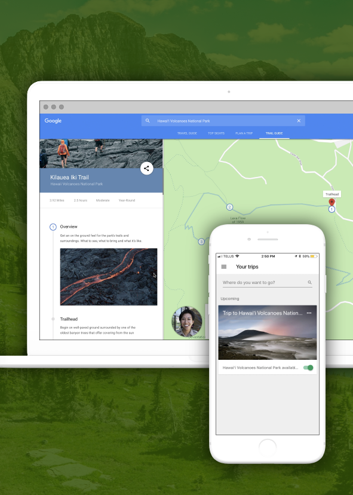
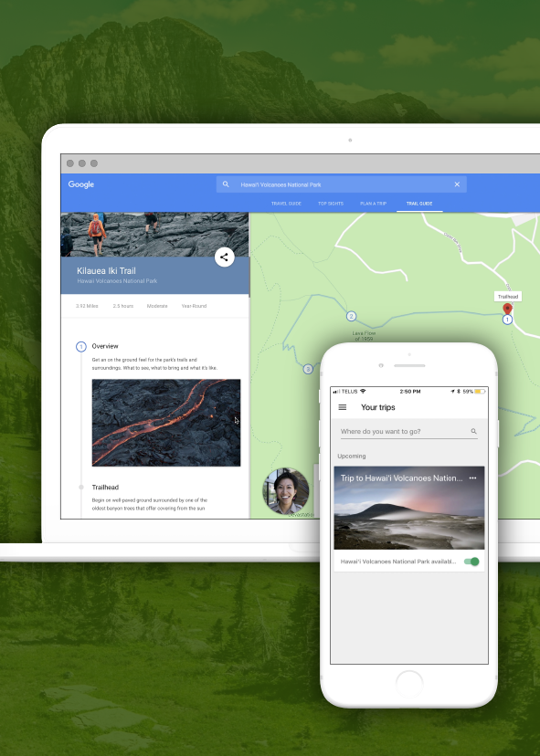
Trail Guides, in partnership with National Park Service and Google, is a micro-site built into the Google Destinations framework that gives potential visitors an on-the-ground prespective through national parks. Trail Guides aids in the micro-moment of wanting to know about a park, to wanting to go to a park, to help bring awareness to national parks, and to create brand awareness for National Park Service (NPS).
This project is based on Hawai'i Volcanoes National Park, built into Google's search results, and influenced by a previous collaboration between National Park Service and Google. For this project, we solely focused on national parks.
Brand Research, User Research, Video Editing, Strategy
Illustrator, Premiere Pro, After Effects, Audition, Keynote
National Park Service (NPS) is an agency under the federal government of the United States, tasked with managing all the national parks, many national monuments, and other conservation and historical properties of the country. Although national parks see around 300 million visitors per year, since 1987, there has been a decline in visitation by 20% per capita (measured against the total US population), indicating a long-term decline. Additionally, National Park Service (NPS) is having trouble reaching younger and more diverse audiences.
"National park visitation is about 20 percent less than it was in 1987. As a share of the population, park visitation has gradually declined almost ever since." — Sean Regan, Property and Environment Research Centre
"At a time when nearly one in four Americans is under the age of 18..., they say most park visitors are older... 'If we were a business, we'd be out of business in the long term'." — Jonathan Jarvis, National Park Service Director (National Geographic, 2016)
National Park Service's (NPS) mission is to protect America's natural and cultural resources to ensure it can be passed on to future generations, while providing opportunities for enjoyment, education, and inspiration. This is guided by the agency's values: to be a guardian of natural and historical resources, to advocate for conservation, and to be an educator of heritage and legacy.
The challenge is that technology is threatening to monopolize the attention of younger audiences, and with a life spent indoors in front of screens, it is becoming increasingly difficult to foster a conservation ethic for future generations.
The NPS site and its content services are more catered to those who have experience with going on outdoor adventures and already have a place in mind for where they want to go. While the main site is dense with information, its affiliate sites provide sometimes the same, or sometimes new information, creating a fragmented experience that makes navigation difficult for novice users.
Outside NPS, there already exists a library of travel-adventure-related, trip planning products. The more exploratory products lean toward passive enjoyment of rich media, and the more actionable, educational products support moments when people are actively looking for their next destination to visit.
 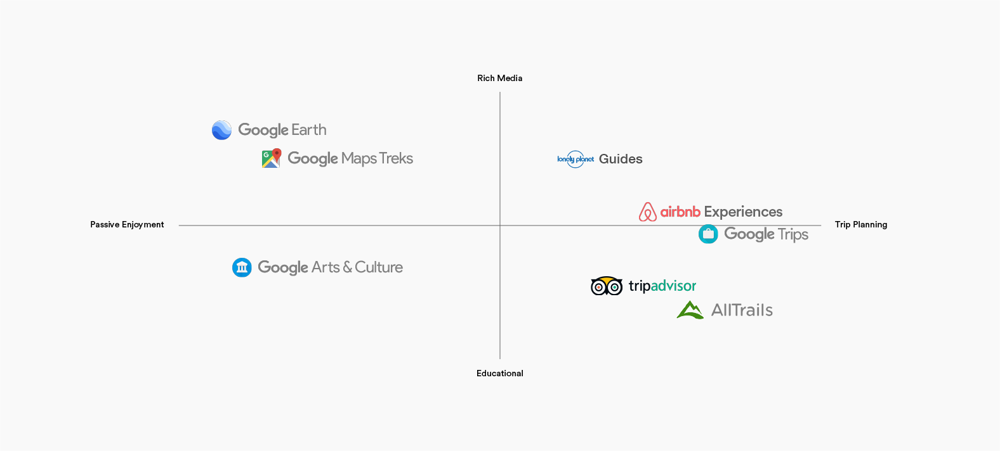
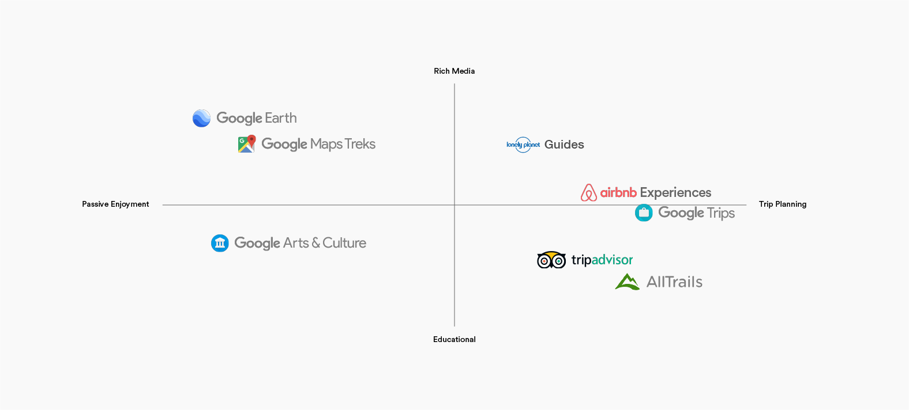
Through our Sprint process, we developed three initial strands of insight—park experience, shared ownership, and sense of responsibility—into ideas that would drive our concept of "creating a connection to the park by dispersing the park's essence in each person and allowing it to prosper and resurface in a new way." This led to our initial question: NPS makes significant effort to facilitate recreation in the parks; how can we help them achieve preservation and conservation as well?
However, we realized that designing directly for advocacy and conservation was not necessarily something we could design for. The complexity of this problem would likely lead to us design for desired outcomes, rather than the experience, something that does not support a user-centred approach.
Before a person becomes a regular visitor and full supporter of parks, they first need to be aware of national parks. Instead of designing directly for conservation, we shifted our focus on building connections to parks through recognition and visitation. And so we formed new questions around this: How might we provide an opportunity to increase recognition that leads to an increase in visitation? How might we connect people to national parks through recognition and visitation?
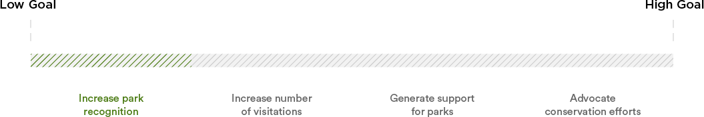NPS understands that a digital intervention can offer an opportunity to strengthen their connection with younger audiences. We developed a list of goals that could strengthen a person's level of connection with parks, and aimed to tackle a "low-on-the-tree goal" as a first step towards conservation.
A common trend we saw during interviews was "I heard about Yosemite", or "Mount Rainier is on my bucket list", as a precursor to planning a trip. So we used this to leverage the moment when a person is intrigued and in an imaginative state, as they browse for places they've heard about or seen on social media. We observed their exploratory and discovery behaviours, which included jumping from site to site, and zooming in an out of maps to paint a mental picture of destinations.
Additionally, we saw an opportunity to build upon the existing partnership between NPS and Google Arts & Culture as a way to reach a wider audience through Google's platforms, and more specifically, their platforms surrounding travel.
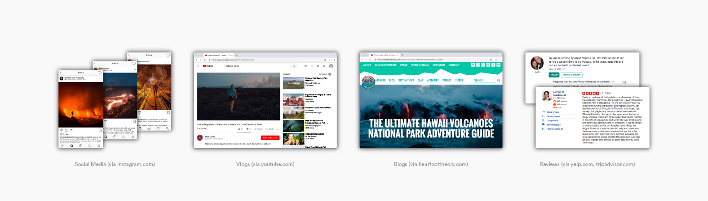We started at "search", as a natural way to meet our audience where they're going to be, as they organically search for information about a park. By leveraging the moment when a person wants to learn more about a park, when they are prompted by excitement, curiosity, and desire for adventure, we have the highest potential to pique their interest. We see this as a micro-moment of "I want to know" about a park, with the possibility of teetering into "I want to go" to a park.
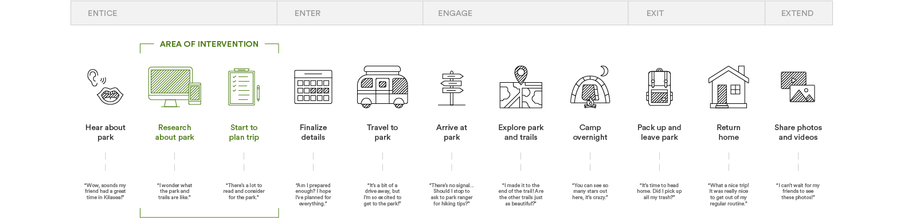This micro-moment is the starting point in helping to paint a picture of a destination, for users to decide whether or not they want to visit a park. In the exploration stage, their searches are more broad, and it is during this stage that our product excels at servicing the user with quick, relevant, and credible information. Information such as quick links of on-the-ground trail experiences are showcased early on in hopes that the information will be enough to aid in their decision of whether or not they want to learn more about the destination. If so, their search becomes more narrow and specific, transitioning into more detailed research on a park.
Trail Guides' purpose is to service information more readily and to not overload users with specifics on trip planning, to relieve the friction of not knowing where to learn more about a park, or not wanting pure planning information. The perceived value here is that people are able to make quicker, more informed decisions about their destination selection by getting a better picture of the park experience. Because of this, this service is seen as perhaps, unnoticeably desirable.
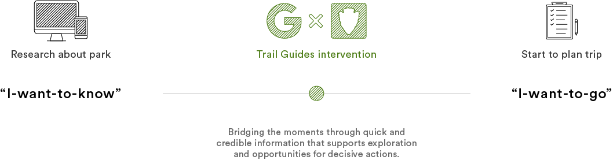NPS's visitors range from adults and families to the elderly, but unlike the adults who found recreational activities through venturing outdoors, the younger generation may be more interested to stay indoors to play video games, watch online videos, etc. And that is why, through a digital intervention, we are able to meet the audience where they're at, beginning at the base of their curiosity.
We developed multiple personas during our process, but our primary target persona is the "hopeful explorer", who enjoys the outdoors and is open to going on new adventures, but is unaware of national parks. This explorer is interested in finding new parks to visit, but may not want to spend too much time looking for information across multiple sites. Our secondary persona, the "urban dweller", is given a taste of adventure with the real utilitarian aspects around preparing for a trip, while our tertiary persona, the "weekend warrior", already has tried-and-true methods of gathering information, and is not necessarily within the current scope.
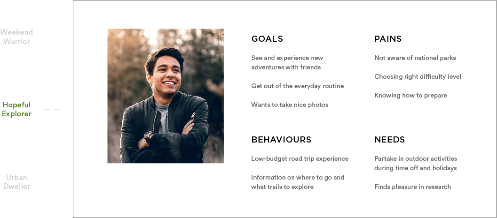We moved away from creating a solution on the NPS website, as that would only bloat and create more of a redundancy in their already info-dense platform. The benefit of a collaboration between NPS and Google Destinations allows users to make quicker, more informed decisions through glimpses of park experiences, with the assurance that they're obtaining information from a credible source. For NPS, this increases their brand recognition through exposure to the tech giant's users who use their search engine, and in turn, will lead to conservation awareness in the long run. And for Google, in addition to being able to collecting insights from the types of audiences who use Trail Guides, this will strengthen their growing travel eco-system and off-the-road trial experiences on Google Maps.
Upon landing on our search result, a rich search provides an enticing image of a key point on a trail, as well as a sense of orientation through an small, accompanying map preview. Users are then introduced to their park ranger, who give a first-hand perspective of what to expect and how to prepare. This was adapted through research on how people tend to go to blogs, vlogs, and reviews to get a sense of what actual people who have been to parks were saying. The added benefit of having an expert on the subject really spoke to notice trail-goers who were wary that the information they were reading was in fact credible.
Additional information available range from packing suggestions, videos of trails to give a sense of the location and terrain, and key viewpoints, or what we call "gems". Gems build a sense of anticipation for wanting to visit a park, and as our research showed, the main reason a person would choose one trail over another.


With most national park attendees, they often travel in a group, or with at least one other travel buddy. Trail Guides provides the ability to share discoveries with travelling companions, and the option to save the trail for later, when there is more serious consideration and planning surrounding going to a park.


Trails are off-loaded onto Google's existing travel platform, Google Trips, where users are able to access all the information offline even if the park they're at doesn't have reception or Internet—which is true for most national parks.
National parks are more than just another outdoor location; they are a symbol of America's heritage. Some of our interviewees thought they may have been to a national park, but were unsure if it was a national park or just another park. With 58 national parks under NPS, and even more locations including reserves and monuments, there is a huge potential for NPS and Google Destinations to expand their network to bring awareness to these natural lands. These locations already bring in millions of visitors every year, from all over the world; we can only imagine what a positive impact a strong connection the national parks could make.
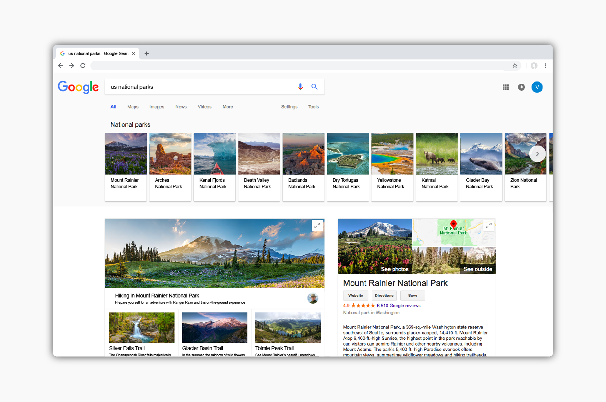